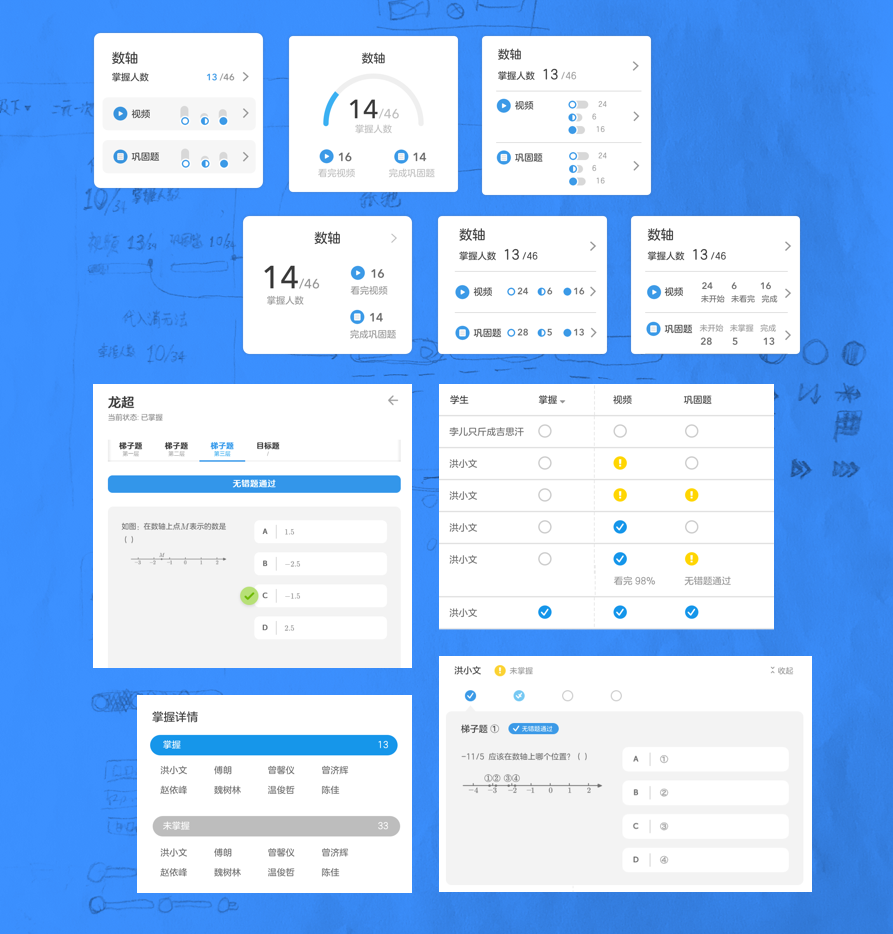
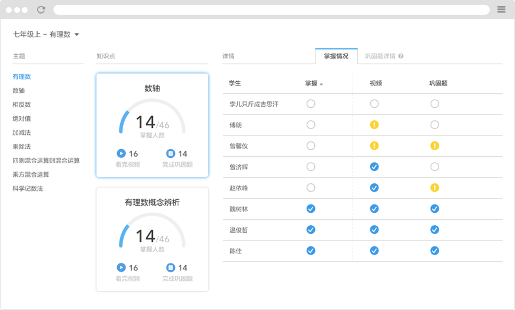
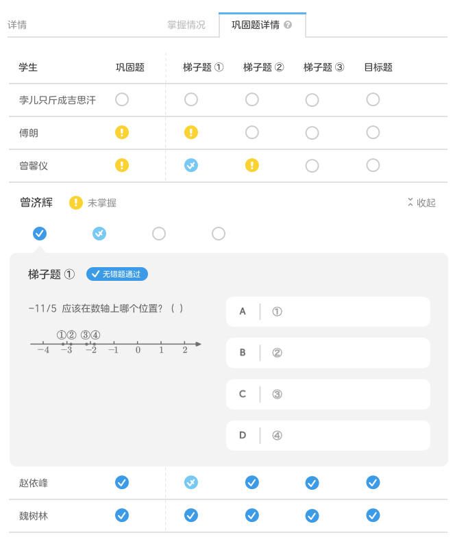

问题陈述
「老师获取学生的学习反馈」是学习活动中重要的环节。它可以帮老师掌握学情动态，也能用来评价教学效果。一直以来，老师获取反馈是通过传统的「留作业－收作业－判作业」流程。这不仅耗费时间长，也是一项繁重的体力活。
在学生端，洋葱数学把基础概念知识的学习带到了线上，同时也在不断生成学习数据。这意味着，学生的学习反馈能被实时的送到老师手里，使得时间大幅缩短。我们需要一款产品帮助老师查看学习数据，从而提升教学效率。
需求分析
要搞清如何能给用户提供有价值的产品，需要足够地理解用户，站在教师的角度思考。带着问题，我访谈了一起合作的老师。我不仅想知道老师对数据有什么需求，更要知道为什么——日常的教学活动如何进行，以及当中做怎样的决策决定。我们发现老师关心的场景有：
- 知识点布置为作业，查看完成状态。
- 学生自学知识点后是否掌握，为什么没掌握。
- 有没有练习中多数学生卡住的点，需要在课堂上重点强调。
进一步，我想看看在老师的认知中，什么数据能回答这些问题。我用了类似卡片分类的方法，事先把数据内容条目写在纸条上（e.g. 完成知识点人数-数字，看完视频比例-百分数），请老师和使用场景对应。教师也可以自己补充或修改。如此，我将使用场景转化为了数据需求。
原型
综合以上研究分析结果，我开始考虑如何编排信息，用何种表现形式传达学习数据。满足上述使用场景需求的同时，还希望达到这些设计目标。
- 查看数据的路径条理清晰
- 信息表达方式合理
- 便捷地在内容间导航
草图阶段帮助我发散设计想法。为找到合理的操作路径，我尝试不同的布局，划分概括信息、详细信息。把数据项目抽象成元件，探索各个元件最佳的表现形式。然后我选择出最恰当的布局和元件，组合成高保真原型，用来收集用户的反馈。

反馈迭代
我带着测试原型再次造访老师，尽早收集反馈发现自己想不到的问题。我观察老师使用原型完成指定的任务，并在结束后进行访谈。根据发现的问题我对设计进行迭代改进，例如老师对一些课程设计的概念不熟悉，需要给予解释。

知识点卡片显示主要的概括性信息，其中最重要的掌握人数辅以图形化进度条，直观表明掌握比例。详情部分默认打开的是这个知识点学生掌握情况的表格，将卡片中信息展开到每个学生的维度。
巩固题详情展示了每个学生完成巩固题的历程，也能看出哪道题的出错情况。每个学生可以原地展开查看具体的做题过程。 